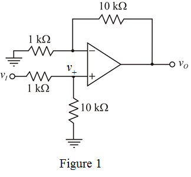

From Figure 1, determine the output voltage.

…… (1)
From Figure 1, apply voltage division rule and determine the voltage .
To get gain more than unity gain, use feedback resistor higher than resistor connected in between inverting terminal and ground.
Consider the value of feedback resistor,
Consider the input resistor, .
Determine the gain of the non-inverting amplifier.
Actually a voltage gain of is needed, so, feed at the non-inverting terminal of the op-amp.
Draw the circuit diagram.

From Figure 1, determine the output voltage.
…… (1)
From Figure 1, apply voltage division rule and determine the voltage .
Substitute for  in equation (1).
in equation (1).
Therefore, voltage gain of the circuit is  .
.
Therefore, the required design is shown in Figure 1.